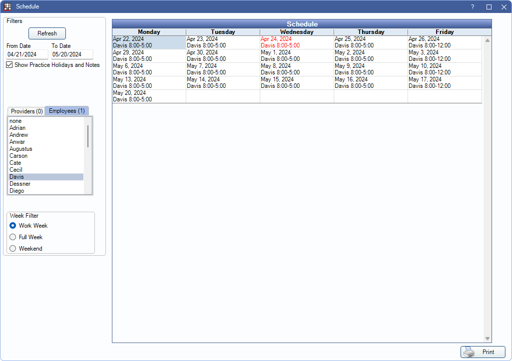

Schedule View Employee
Employee schedules can be quickly viewed and printed from the Manage Module.
In the Time Clock area, select the employee(s). Click View Schedule.
The view is read-only except for users with the Schedules - Practice and ProviderSecurity Permission. Users with the security permission access a view that allows them to edit schedules. See Schedule Setup for more information.
Filter Options: If you change a filter criteria, click Refresh to update.
- From Date and To Date: Customize the date range.
- Show Practice Holidays and Notes: Show practice notes and holidays.
- Show Clinic Holidays and Notes: Only an option when the Clinics feature is enabled in Show Features. Show the selected clinic's holidays and notes entered.
- Clinic: Only an option when the Clinics feature is enabled. Filter the view by clinic.
- Show Schedule Filtered by Clinic: Only an option when the Clinics feature is enabled. Check the box to quickly select all providers and employees associated with the selected clinic and view their scheduled time blocks. While in this view, all buttons in the lower left are disabled and schedules can't be edited.
- Provider: Highlight the providers to show their schedules.
- Employees: Highlight employees to show their schedules.
- Week Filter: Choose which days of the week show on the schedule:
- Work Week: Display schedules for Monday to Friday only.
- Full Week: Display schedules for all seven days of the week (i.e., Sunday to Saturday).
- Weekend: Display schedules for Sunday and Saturday only.